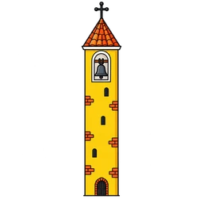
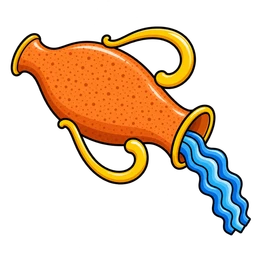

Color Walk — camminata a colori, domenica 20 settembre 2026, Rivalta sul Mincio

Iscriviti alla camminata
Dati e pagamento in un passaggio solo. Ci vuole un minuto. Si iscrive un maggiorenne, che può aggiungere i minori a suo carico: 10 € chi ha 18 anni o più, 5 € dai 6 ai 17, e sotto i 6 anni non serve iscriversi. Le età si contano al giorno della camminata. A fine giro c'è l'aperitivo in Piazza Chiesa, compreso nella quota per tutti: non si prenota, ci si ferma e si brinda.
Le iscrizioni online si chiudono alle 23:59 di venerdì 18 settembre, ma ci si può iscrivere anche di persona, al banchetto in piazza: martedì 15 settembre e poi il giorno stesso, con il modulo cartaceo e in contanti. Il materiale basta per 300 partecipanti. Se piove, la camminata è rinviata a domenica 27 settembre.
Per chi con l'iscrizione online non ce la fa, o preferisce farla di persona, il banchetto è in piazza martedì 15 settembre, dalle 16:00 alle 18:00, davanti alla chiesa: si compila il modulo cartaceo e si paga in contanti lì per lì. La sacca si ritira poi domenica 20, prima della partenza. Il banchetto torna in piazza anche il giorno stesso, dalle 15:30.
Dai 6 ai 17 anni compiuti il 20 settembre.
Se ce l'hai sottomano. Chi risponde di lui sei tu, e il tuo lo abbiamo già.
Il percorso
Un giro delle vie del paese, partenza e arrivo in Piazza della Chiesa. Si va a passo libero: non c'è cronometro e non c'è classifica.
- Piazza della Chiesa — partenza
- Via Zibramonda, gli stradelli
- Via Zibramonda
- Attraversamento di Via Settefrati
- Via Don A. Bodini
- Via 25 Aprile
- Attraversamento di Via Garibaldi
- Via della Resistenza
- Via Papa Giovanni II
- Via Panicella
- Via Bedini
- Via Monteverdi
- Via Rossini
- Attraversamento di Via Francesca
- Via Arrivabene
- Via Gramsci — il percorso non scende verso il Mincio
- Piazzale della Chiesa — arrivo, e aperitivo
Lungo il giro ci sono sette postazioni dove si viene coperti di polveri colorate. Dove stanno esattamente lo diciamo agli iscritti per email nei giorni prima, insieme alla lunghezza del percorso.
Via Settefrati, Via Garibaldi e Via Francesca si attraversano con la strada chiusa temporaneamente, il tempo di far passare la camminata, con il supporto della Polizia Locale. Per il resto si cammina su strade urbane aperte: si tiene la destra, si seguono le indicazioni dei volontari e si dà sempre precedenza ai mezzi di soccorso.
Le sei contrade
Il paese si divide in sei contrade, ognuna col suo colore e il suo stemma. Sono quelle del Palio.

i Piasaröi
le FanfaneUna per una, con quello che hanno dipinto sul cartello: le contrade in /eventi.
Chi c'è dietro
Chi organizza, chi dà il patrocinio e chi mette il cibo sono tre cose diverse: qui stanno separate, ognuna con quello che fa scritto accanto.

Organizzano la Parrocchia Santi Vigilio e Donato di Rivalta sul Mincio e l'Associazione San Filippo Neri ANSPI APS-ETS di Rodigo, circolo affiliato ad ANSPI, a cui va per intero la quota di iscrizione.

Con il patrocinio del Comune di Rodigo e la collaborazione della Polizia Locale Mantova Ovest, che presidia gli attraversamenti.
Con il sostegno delle attività di Rivalta, che offrono l'aperitivo di fine camminata e quello che ci sta intorno — tutto compreso nella quota.

Sito e materiali di Alberto Pecchini — Rivalta sul Mincio, frazione del Comune di Rodigo (MN)